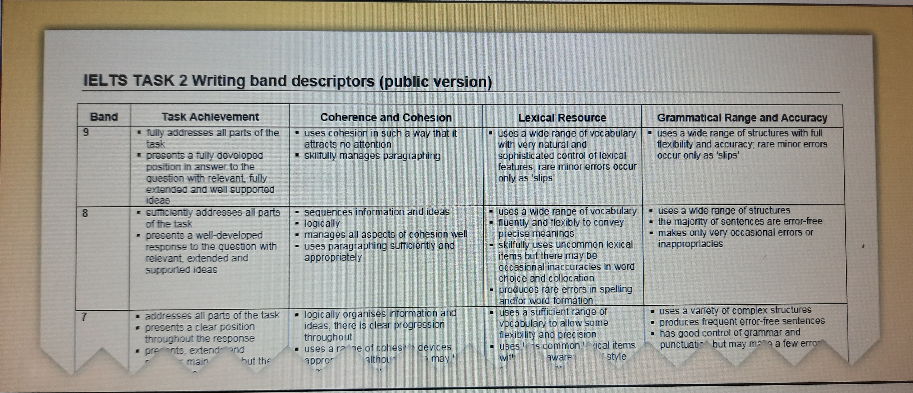

The writing portion of the IELTS is 60 minutes in length and requires the candidate complete two writing samples referred to as Task 1 and Task 2. The candidate's overall writing band weights a third to Task 1 and two thirds to Task 2. Candidates are thus expected to allot 20 minutes to Task 1 and 40 minutes to Task 2. The Academic and General Writing exams are different. Task 1 of the Academic exam requires the candidate describe information presented in a graph, table, chart, diagram or map, or some combination of these sources. Task 1 of the General exam requires the candidate write a letter. Candidates must write essays to fulfil Task 2 on both exams; however, General Module candidates do not forfeit marks if their writing is less formal in tone. Despite these differences between the Academic and General exams, the marking rubric examiners use to grade Task 2 on both tests is very similar. Candidates are assessed on their performance in four categories: Task Achievement, Coherence and Cohesion, Lexical Resources, and Grammatical Range and Accuracy. The Task Achievement portion of the mark gauges the extent to which the candidate is able to fulfil the requirements of the essay task. Coherence and Cohesion is a measure of the candidate's ability to deliver and connect ideas in a way that expresses a message clearly. The Lexical Resources portion of the mark assesses the accuracy, variety and relevance of the vocabulary a candidate uses in their essay. Grammatical Range and Accuracy grades the candidate's demonstration of grammatical competence and execution. These four sections are interdependent, and thus performing poorly in one often lowers performance in others. Although the marking breadths are usually displayed as having a lateral relationship in most public IELTS literature (see Figure 1.1), this relationship is more accurately described as one founded on the strength of a candidate's grammatical and lexical resources ( see Figure 1.2 ).
Figure 1.1Accurate grammatical and lexical demonstration acts as a base for the communication of any message. A candidate with weak grammatical and lexical execution cannot score well for coherence - the message simply isn't clear enough to make this possible. Poor grammar and lexical choices can also impact the ability of the sentences and paragraphs in a candidate's response to work together, thus reducing the clarity with which the links between ideas can be seen, traits otherwise known as coherence and cohesion. When both coherence and cohesion suffer, the response's fulfilment of task is limited, as the candidate simply does not have the ability to extend the answer and develop a full response. Assuming the candidate has interpreted the Task 2 question correctly and structured their essay appropriately, the interdependence that exists between these four assessed areas reveals overarching traits of certain IELTS Writing bands. For example, when the IELTS examiner reads a band 5 candidate's writing, there will be occasional moments when they lose track of what the writer is saying. These periodic instances of complete incoherence are, however, not present at the band 6 level, and this is a clear distinguisher between the two. Band 6 candidates are capable of producing ideas that can be understood by the examiner a majority of the time despite grammatical and lexical inaccuracy in more than 50% of all sentences. It is for this reason that candidates often get stuck at the band 6 level: they don't realise they are making mistakes because their writing successfully communicates a message. Band 7 candidates are an improvement on this. They produce coherent ideas and are capable of writing accurate sentences more than 50% of the time; however, mild wording issues result in regular instances of awkward constructions or improper tone. Band 8 and beyond is denoted by increasingly few grammatical and lexical errors despite a growth in the complexity of sentence structures.
Figure 1.2In IELTS Task 2, the candidate is required to write an essay, a structure that must be understood before it can be effectively created. The easiest way to define an essay is to first define the smaller units it is made of:
A sentence is a group of words.
A paragraph is a group of sentences.
An essay is a group of paragraphs.
In its most basic form, an essay supports, refutes or analyses a topic through the use of examples, discussion and reason. The purpose of an essay is to either (1) declare a position on a topic and persuade the reader to agree or (2) derive a position on a topic after discussing this topic in writing. The most straightforward approach to scoring well in Task 2 is to structure the response in a logical way that allows the candidate to make and analyse claims, share and discuss examples, and draw conclusions, all within 40 minutes. This is best done using a structure that is divided into four or five paragraphs. Each paragraph is subdivided into several sentences, and each sentence carries out a specific job. When united, the sentences work towards a strong centralised purpose: either to argue in support of a position, or to discuss multiple positions.
To illustrate, look at this argument essay structure:
- Sentence 1 - Background statement
- Sentence 2 - Detailed background statement
- Sentence 3 - Thesis
-Sentence 4 - Outline sentence
- Sentence 1 - Topic
-Sentence 2 - Example
- Sentence 3 - Discussion
-Sentence 4 - Conclusion
- Sentence 1 - Topic
- Sentence 2 - Example
-Sentence 3 - Discussion
- Sentence 4 - Conclusion
- Sentence 1 - Summary
- Sentence 2 - Restatement of thesis
- Sentence 3 - Prediction or recommendation
This essay structure contains a total of 15 sentences and will put an IELTS essay at roughly 250-275 words, a length that is long enough to allow the candidate to fulfil their essay question but also short enough that it can be produced within 40 minutes. Each sentence should present a clear idea and link to other areas in the essay using cohesive phrases.
Following an essay structure such as the above provides the IELTS candidate with numerous advantages. For one, it allows the candidate to save time in the examination room, as a decision on essay format has been made ahead of time. Secondly, this structure encourages cohesion at the essay level, which directly benefits a candidate's Coherence and Cohesion mark. This in turn improves the candidate's Task Achievement mark, as using the structure guides the candidate towards a fuller response to the essay question. Finally, simply knowing that the essay's structure has already been decided can be a huge confidence boost for the candidate when in the exam room, and confidence always leads to better writing. Being capable of producing and adapting essay structures before entering the exam room gives the candidate control over their exam and sets up a scenario within which they are much more likely to be successful.
Understanding the meaning of an essay question is essential to writing a solid essay in response. When interpreting essay questions, the candidate should first pinpoint these three attributes: keywords, qualifying words, action words.
To demonstrate these three properties, take the following essay question:
Technology is becoming increasingly prevalent in the world today. In the not too distant future, technology will completely replace the teacher in the classroom. Do you agree or disagree with this statement?
Keywords are the topics that focus the candidate's writing. In other words, they are the subjects that can be included in the candidate's written response. In this example essay question, 'technology' and 'education' are the two controlling keywords. Topics outside the spheres of 'technology' and 'education' thus have no place in this essay.
Qualifying words are the words in the question which tell the candidate how the various ideas relate. They are often the words that describe degree and frame some overarching opinion. In the above sample question, the phrase 'increasingly prevalent' is used. Notice how this clarifies what is being said about technology - technology is being used more and more in classroom education. The phrase 'completely replace' shapes the relationship expected to develop between technology and education - teachers are going to be eliminated by technological advancement. In the not too distant future makes clear that the prediction in the question is expected to occur somewhat soon. Notice how these qualifying words shape the question and give it increased precision and depth. It is very important the candidate understands the nature of this depth to ensure their response is accurately aligned to the question.
Here are some simplified examples of qualifying words grouped by what they describe:
-Contrast
Technology's presence is growing the world over. Despite this,its ability to replace a human in the near future is unlikely.
Although technology's presence in the classroom is growing the world over, its ability to replace a human teacher in the near future is unlikely.
Technology-based instructors are very good at teaching simple concepts through repetitive games. However, they are incapable of maintaining control of young students in a dynamic classroom setting.
Technology-based instructors are very good at teaching simple concepts through repetitive games. On the other hand, they are incapable of maintaining control of young students in a dynamic classroom setting.
Unlike a human teacher, technology-driven instructors can carry on teaching for an indefinite period of time.
In contract to a human teacher, technology-driven instructors can carry on teaching for an indefinite period of time.
A human teacher can only teach for a finite amount of time, whereas a technologydriven instructor can carry on teaching indefinitely.
A human teacher can only teach for a finite amount of time, while a technology-driven instructor can carry on teaching indefinitely.
A human teacher can only teach for a finite amount of time. Conversely, a technology-driven instructor can carry on teaching indefinitely.
A human teacher can only teach for a finite amount of time. This differs from a technology-driven instructor, which could carry on teaching indefinitely.
A technology-driven teacher would need to adjust lessons to its students. This is something it has in common with human teachers.
A technology-driven teacher would need to adjust lessons to its students, as would a human teacher.
A technology-driven teacher would need to adjust lessons to its students, a trait it has in common with human teachers.
A technology-driven teacher would need to adjust lessons to its students. Human teachers would likewise need to tailor their teaching approach.
A technology-driven teacher would need to adjust lessons to its students. Similarly, human teachers would also need to tailor their teaching approach.
A technology-driven teacher would need to adjust lessons to its students. This mirrors the approach of human teachers, who would also need to tailor their teaching.
A technology-driven teacher would need to adjust lessons to its students. This mirrors the approach of human teachers, who would also need to tailor their teaching.
A technology-driven teacher would need to adjust lessons to its students. This parallels the approach of human teachers, who would also need to tailor their teaching.
A technology-driven teacher would need to adjust lessons to its students. This parallels the approach of human teachers, who would also need to tailor their teaching.
A technology-driven teacher would need to adjust lessons to its students. This reflects the approach of human teachers, who would also need to tailor their teaching.
A technology-driven teacher would need to adjust lessons to its students. This resembles the approach of human teachers, who would also need to tailor their teaching.
A technology-driven teacher would need to adjust lessons to its students. This resembles the approach of human teachers, who would also need to tailor their teaching.
A technology-driven teacher would need to adjust lessons to its students. In this way, the approach of human teachers is alike.
A technology-driven teacher would not tire, a quality beneficial to lessons that require extended periods of repetition.
A technology-driven teacher would not tire, a quality advantageous to lessons that require extended periods of repetition.
A technology-driven teacher would not tire, a positive trait when it comes to lessons that require extended periods of repetition.
A technology-driven teacher would not tire, a desirable trait when it comes to lessons that require extended periods of repetition.
Technology-based teaching would have difficulty catering to individual students needs, a drawback to this teaching arrangement.
Technology-based teaching would have difficulty catering to individual students needs, a disadvantage to this teaching arrangement.
An undesirable trait of technology-driven teaching is the difficulty it would have when catering to individual students needs.
An negative trait of technology-driven teaching is the difficulty it would have when catering to individual students needs.
Technology's role in the classroom has been climbing the world over.
Technology's role in the classroom has been increasing the world over.
Technology's role in the classroom has been growing the world over.
Technology's role in the classroom is expected to remain steady into the foreseeable future.
Technology's role in the classroom is expected to remain stable into the foreseeable future.
Technology's role in the classroom is expected to remain unchanged into the foreseeable future.
Technology's presence in the classroom is expected to decline in the foreseeable future.
Technology's presence in the classroom is expected to drop in the foreseeable future.
Technology's presence in the classroom is expected to shrink in the foreseeable future
A reduced presence of technology in the classroom is expected to carry on into the foreseeable future.
Technology's initial growth as a classroom presence was volatile.
Technology's initial growth as a classroom presence was varied.
Technology's initial growth as a classroom presence was unstable.
Technology's initial growth as a classroom presence was unpredictable.
Technology's presence in the classroom spiked in the early 2000s.
Technology's presence in the classroom peaked in the early 2000s.
Technology's presence in the classroom hit a trough in the early 2000s.
Technology's presence in the classroom hit bottom in the early 2000s.
Technology's presence in the classroom has grown in unexpected ways.
Technology's presence in the classroom has grown in astounding ways.
Technology's presence in the classroom has grown in unorthodox ways.
Action words are the words that elicit response from the candidate and ultimately channel the candidate's writing towards an argument or discussion essay structure. In the above example essay question, the action words are 'do you agree or disagree with this statement', a phrase that instructs the candidate to choose and support a position. This scenario is best responded to using an argument essay structure.
Here are some additional IELTS action words grouped by what they require:
Support this statement.
Argue in favour of this statement.
Prove this statement.
Refute this statement.
Disprove this statement.
Why is this statement untrue?
Do you agree or disagree?
To what extent do you agree or disagree?
What is your opinion?
How do you feel about this?
Come to a reasoned conclusion.
Contrast these two ideas.
Compare these issues.
Discuss this problem.
Present a discussion on this issue.
Analyse both sides of this statement.
Combining the keywords with the qualifying words delivers an understanding of the context within which the Task 2 question is framed. Responding appropriately to the action words within this context is at the very base of IELTS essay success.
When engaging the exam, a misinterpreted question can instantly cause a candidate's writing to drop several bands, as it could mean all examples, discussion and conclusions are misaligned with the IELTS Writing task. To avoid this, the candidate should always take a moment to mentally paraphrase the question before they start writing to ensure they understand precisely what the question is asking. For example, a fitting reword of the above essay question could be:
Now that the question is fully understood, it can be responded to effectively.
Decide what the keywords, qualifying words and action words are for these sample Task 2 writing questions. Then rewrite each question in your own words.
Of all public transportation options, a metro is the most convenient way to get around a large city. Do you agree or disagree?
Keywords:
Qualifying words:
Action words:
Reworded question:
The world's wealthiest countries have increasingly been outsourcing labour-related jobs to cheaper alternatives in other nations. Write an essay supporting the case for the outsourcing of labour.
Keywords:
Qualifying words:
Action words:
Reworded question:
Many people feel violent media encourages real-life violence among young people. What do you think causes young people to behave violently?
Keywords:
Qualifying words:
Action words:
Reworded question:
More than one university degree is required to get ahead in many professions today. In the future, it is likely that people will attain a number of degrees before even starting work. Respond to this argument.
Keywords:
Qualifying words:
Action words:
Reworded question:
Of all public transportation options, a metro is the most convenient way to get around a large city. Do you agree or disagree?
Keywords: public transportation, metro, large city
Qualifying words: most convenient
Action words: Do you agree or disagree?
Reworded question: Is a subway system the easiest way to get around a large city?
The world's wealthiest countries have increasingly been outsourcing labour-related jobs to cheaper alternatives in other nations. Write an essay supporting the case for the outsourcing of labour.
Keywords: wealthiest countries, outsourcing, labour-related jobs
Qualifying words: increasingly cheaper alternatives
Action words: Write an essay response supporting the case for the outsourcing of labour.
Reworded question: Argue that the migration of labour from wealthier nations to other countries is a phenomenon that should be encouraged.
Many people feel violent media encourages real-life violence among young people. What do you think causes young people to behave violently?
Keywords: violent media, real-life violence, young people
Qualifying words: many, encourages
Action words: What do you think causes young people to behave violently?
Reworded question: What incites violence among young people?
More than one university degree is required to get ahead in many professions today. In the future, it is likely that people will attain a number of degrees before even starting work. Respond to this argument.
Keywords: university degree, professions
Qualifying words: more than one, get ahead, a number of, before even starting
Action words: Respond to this argument.
Reworded question: Do you agree that people will need to get a number of degrees to be competitive in the workplace of the future?
Using your new understanding of keywords, qualifying words and action words, write your own IELTS Task 2 essay question. Then identify the keywords, qualifying words, and action words you included in the question. If needed, refer to the lexical tables earlier in this chapter for wording ideas. For feedback on your question, post your work to the ieltsnetwork.com forum.
_________________________________________________________________________________________________ _________________________________________________________________________________________________ _________________________________________________________________________________________________ _________________________________________________________________________________________________ _________________________________________________________________________________________________ _________________________________________________________________________________________________
Keywords:
Qualifying words:
Action words:
Now that the question has been broken into keywords, qualifying words and action words, an aligned essay can be written. All IELTS essay questions require the candidates clearly state their position on the topic, and in the case of an argument essay, this declaration occurs in the first paragraph as a thesis. (Declaring a position in a discussion essay will be explained in section 2.7.)
An essay's thesis is only one sentence long, but it is the most important sentence in the entire argument essay. It is the sentence that establishes a direction for the essay and acts as the primary link between the essay and the Task 2 question. Thus, if it is not composed correctly, it will cause the entire essay to be off-topic to some degree. Despite the criticalness of its role, a thesis is very easy to write. In fact, the thesis can borrow words directly from the essay question.
To illustrate, in the example question from section 1.3, the thesis can only be one of two things:
I agree that technology will replace teachers in the classroom.
or
I disagree that technology will replace teachers in the classroom.
Note how closely these two theses resemble the action words of the essay question. Writing the thesis in this way ensures the examiner is aware of the relationship between the essay question and the essay response. In other areas of the Task 2 response, however, the candidate is best to vary their wording when possible.
Read each question and write a fitting thesis.
Of all public transportation options, a metro is the most convenient way to get around a large city. Do you agree or disagree?
Thesis:
The world's wealthiest countries have increasingly been outsourcing labour-related jobs to cheaper alternatives in other nations. Write an essay supporting the case for the outsourcing of labour.
Thesis:
Many people feel violent media encourages real-life violence among young people. What do you think causes young people to behave violently?
Thesis:
More than one university degree is required to get ahead in many professions today. In the future, it is likely that people will attain a number of degrees before even starting work. Respond to this argument.
Thesis:
Of all public transportation options, a metro is the most convenient way to get around a large city. Do you agree or disagree?
Thesis: I agree that a subway system is the most convenient way to get around a large city.
The world's wealthiest countries have increasingly been outsourcing labour-related jobs to cheaper alternatives in other nations. Write an essay supporting the case for the outsourcing of labour.
Thesis: In this essay, I argue that the outsourcing of jobs to less wealthy countries is a phenomenon that should be encouraged.
Many people feel violent media encourages real-life violence among young people. What do you think causes young people to behave violently?
Thesis: I argue parental negligence and the declining rates of in-person communities worldwide are the main catalysts of youth violence.
More than one university degree is required to get ahead in many professions today. In the future, it is likely that people will attain a number of degrees before even starting work. Respond to this argument.
Thesis: I agree that in the future people will need to complete several degrees to ensure their workplace competitiveness.
The introduction paragraph acts as a roadmap for the entire essay. In the case of an argument essay, it declares the topic, the writer's position on the topic, and the supporting points that will be used to uphold and prove this position. Thus, when an IELTS examiner reads the introduction to a essay, they should already know exactly what the rest of the essay will look like.
Review the four sentences that appear in an argument essay's introduction paragraph:
-Background sentence
-Detailed background sentence
-Thesis
- Outline
To illustrate these sentences in action, this same essay question will be used:
Technology is becoming increasingly prevalent in the world today. In the not too distant future, technology will completely replace the teacher in the classroom. Do you agree or disagree with this statement?
The background sentence of the introduction paragraph declares something general about the essay question's topic. Typically, this sentence will paraphrase the message delivered by the keywords and qualifying words. For example:
The use of technology is increasing rapidly in the modern world.
Here, a general sentence has been written about the nature of one of the main keywords in the essay question: technology. The second sentence in the introduction paragraph needs to narrow the focus of the essay further. In this instance, the candidate would connect the idea of increasing technological adoption with the classroom. For instance:
Growing technological influence can even be seen in the classroom.
Now that the background sentences are finished and the essay has been narrowed to the topics outlined in the essay question, it is time to compose a comprehensive thesis. As explained, the thesis is the most important sentence in the entire essay because it addresses the essay question directly. In this instance, the candidate has been given the choice to support or refute a statement on technology's role in the future classroom. Choosing the position - support or refute - that is easiest to write enhances the candidate's chances of greater grammatical and lexical accuracy, overall coherence and cohesion, and increased achievement of task, and in effect helps establish a writing scenario within which the candidate is more likely to succeed. For candidates serious about maximising their band, the IELTS Writing exam is not the place to take chances on a straddled position that tries to concurrently agree and disagree.
To demonstrate how an effective thesis can simplify the writing process, review what the essay question is in essence asking: will technology someday take the place of a human teacher in the classroom?
...students would learn entirely from computers
...probably not
...because a robotic teacher would not be able to discipline misbehaving students
...because a robotic teacher would be unable to cater to a student's learning needs
...because a robotic teacher would not be capable of encouraging students as well as a human
...because a robotic teacher's classroom would be boring and difficult to learn from
...disagree!
With the easier position selected, the candidate can confidently write a fitting thesis:
I disagree that technology will completely replace human teachers in the foreseeable future.
Following this declaration of position, the candidate needs to state what points they will use for support. This is done in the fourth and final sentence in the introduction paragraph: the outline sentence.
The outline sentence declares two points that will be used to uphold the thesis. These points are expanded upon in the supporting paragraphs of the essay.
Supporting points should be selected based on how easily real-life examples can be brainstormed. Here are two supporting ideas from the above brainstorm session and a real-life example of each:
1. A robotic teacher would be unable to cater to a student's learning needs.
Example: A robotic teacher cannot recognise human physical cues.
2. A technology-driven teacher would have difficulty encouraging students. Example: Children learn better when emotionally connected to their teacher.
The outline sentence is formed by grouping these points and declaring a progression for the essay:
Analysing the inability of a technology-driven teacher to both cater to student learning needs and instil motivation will show this.
This marks the completion of the introduction paragraph. Here it is in its entirety:
The use of technology is increasing rapidly in the modern world. Growing technological influence can even be seen in the classroom. Despite this, I disagree that technology will completely replace human teachers in the foreseeable future. Analysing the inability of a technology-driven teacher to both cater to student learning needs and instil motivation will show this.
As can be seen, anyone looking at this introduction paragraph knows exactly what will be examined later in the essay. The introduction paragraph introduces the candidate's topic in the background sentences, presents the candidate's argument in the thesis, and declares the supporting ideas in the outline sentence. To an examiner, an introduction like this clearly defines the candidate's position and plan for progression through the rest of the essay and establishes the link between the essay and the essay question.
Look at the essay questions below. If the question permits, brainstorm points that support and points that refute. Then choose to agree or disagree based on which essay would be easier to write. Finally, write the introduction paragraph for each essay.
Of all public transportation options, a metro is the most convenient way to get around a large city. Do you agree or disagree?
_________________________________________________________________________________________________ _________________________________________________________________________________________________ _________________________________________________________________________________________________ _________________________________________________________________________________________________ _________________________________________________________________________________________________ _________________________________________________________________________________________________
The world's wealthiest countries have increasingly been outsourcing labour-related jobs to cheaper alternatives in other nations. Write an essay supporting the case for the outsourcing of labour.
_________________________________________________________________________________________________ _________________________________________________________________________________________________ _________________________________________________________________________________________________ _________________________________________________________________________________________________ _________________________________________________________________________________________________ ______________________________________________________________________________________________
Many people feel violent media encourages real-life violence among young people. What do you think causes young people to behave violently?
_________________________________________________________________________________________________ _________________________________________________________________________________________________ _________________________________________________________________________________________________ _________________________________________________________________________________________________ _________________________________________________________________________________________________ _________________________________________________________________________________________________ _________________________________________________________________________________________________ _________________________________________________________________________________________________ _________________________________________________________________________________________________ _________________________________________________________________________________________________ _________________________________________________________________________________________________
More than one university degree is required to get ahead in many professions today. In the future, it is likely that people will attain a number of degrees before even starting work. Respond to this argument.
_________________________________________________________________________________________________ _________________________________________________________________________________________________ _________________________________________________________________________________________________ _________________________________________________________________________________________________ _________________________________________________________________________________________________ _________________________________________________________________________________________________ _________________________________________________________________________________________________
Of all public transportation options, a metro is the most convenient way to get around a large city. Do you agree or disagree?
Population dense cities around the world require developed transportation systems for public mobility. Underground rail has proved to be a very effective example of one such system. I agree that a metro is the most convenient way to get around a city. This will be shown by looking at a how a metro seamlessly blends into a city's infrastructure and allows the rider to avoid traffic.
The world's wealthiest countries have increasingly been outsourcing labour-related jobs to cheaper alternatives in other nations. Write an essay supporting the case for the outsourcing of labour.
The 20th century has seen a sharp increase in the number of jobs that have moved from wealthy countries to countries offering cheap labour. Although this is a subject that is contested by many, I feel that this trend has more benefits than drawbacks. The improved relations and economic ties that are created when jobs move from one country to another will be analysed to prove this thesis true.
Many people feel violent media encourages real-life violence among young people. What do you think causes young people to behave violently?
An unfortunate trend is the growth in violence among young people in many parts of the world. This phenomenon moves in tandem with a rise in violent media consumption. Although many feel there is an intrinsic link between the two, I argue parental negligence and the declining rates of in-person communities worldwide are the main catalysts of youth violence. This essay will examine the dangerous nature of these motivators.
More than one university degree is required to get ahead in many professions today. In the future, it is likely that people will attain a number of degrees before even starting work. Respond to this argument.
Trends associated with globalisation have led to levels of competition never before seen. To remain professionally relevant in this work climate, individuals worldwide are pushing themselves to attain an increasingly large amount of formal education. I agree that in the future people will need to complete several degrees to ensure their workplace competitiveness. This will be proved by looking at the professional landscape of my home country and the manner in which qualification bridging continues to grow skilled worker numbers worldwide.
Coherence is the ability of a written piece of work to be understood by the reader.
Cohesion is the manner in which a written piece of work links its ideas to create clear relationships and logical progressions between them.
The Coherence and Cohesion portion of the candidate's mark is a measure of how clearly an essay's ideas are communicated and how fluently these ideas work together. Coherence is most readily achieved by employing short, grammatically correct sentences that are concise and to the point. Cohesion can be achieved by using linking words or phrases, often called 'cohesive devices', to create relationships between the various sentences and paragraphs in the essay. Combining concise sentences with cohesive devices is a controlled way to produce more complex sentence types with accuracy. Almost every sentence in an IELTS essay should have a linking word of some sort. In fact, the only sentence that can omit linking words is the background sentence in the introduction paragraph, as there is no sentence preceding it that can be linked to!
The introduction paragraph written last chapter has several linking words in it. Here, they have been identified in red:
The use of technology is increasing rapidly in the modern world. Growing technological influence can even be seen in the classroom. Despite this, I disagree that technology will completely replace human teachers in the foreseeable future. Analysing the inability of a technology-driven teacher to both cater to student learning needs and instil motivation will show this.
Note the manner in which these linking words help all sentences in the paragraph work as a team:
Even -The word 'even' evolves the ideas of the initial background sentence further. Here, it is being used to restrict the essay's scope. The essay is not referring to all technology; it is referring to technology types that appear in a classroom.
Despite this - This phrase is used to show concession. Although the essay acknowledges that technology is becoming more apparent in the classroom, it does not support the idea that this technology will overtake the classroom role of the teacher.
This - 'This' acts as a bridge between the outline sentences and the central argument of the essay. It refers to the thesis and clarifies that the supporting ideas of (1) lack of educational accommodation and (2) the inability to motivate will act as proof of this thesis.
For all remaining demonstrations encountered in this book, actively note the linking phrases used to create the relationships between sentences and paragraphs. For reference, here is a list of several cohesive devices and a demonstration of their use. Be sure to also note the corresponding punctuation:
Firstly, grade improvement is experienced when high school students get enough sleep every night.
Secondly, grade improvement is experienced when high school students get enough sleep every night.
Finally, grade improvement is experienced when high school students get enough sleep every night.
Lastly, grade improvement is experienced when high school students get enough sleep every night.
For example, several independent studies reveal that high school students in America experience grade improvement when practising this lifestyle.
For instance, many high school students in America experience grade improvement when practising this lifestyle.
Take the example of high school students in America, who regularly experience grade improvement when practising this lifestyle.
Many high school students, such as those from America, experience grade improvement when practising this lifestyle.
Likewise, many high school students in America experience grade improvement when practising this lifestyle.
Similarly, many high school students in America experience grade improvement when practising this lifestyle.
High school students in America also experience grade improvement when practising this lifestyle.
In tandem with this are the experiences of many high school students in America, whose grades improve when practising this lifestyle.
Coupled with this are the experiences of many high school students in America, whose grades improve when practising this lifestyle.
On the other hand, many high school students in America experience grade improvement when practising this lifestyle.
However, many high school students in America experience grade improvement when practising this lifestyle.
Many high school students in America experience grade improvement when practising this lifestyle; however, this is not the case in Canada.
Many high school students in America experience grade improvement when practising this lifestyle, but this is not the case in Canada.
In contrast, many high school students in America experience grade improvement when practising this lifestyle.
Conversely, many high school students in America experience grade improvement when practising this lifestyle.
Further, several independent studies reveal that high school students in America experience grade improvement when practising this lifestyle.
Moreover, several independent studies reveal that high school students in America experience grade improvement when practising this lifestyle.
To add to this, several independent studies reveal that high school students in America experience grade improvement when practising this lifestyle.
Thus, the link between restful sleep and student performance can be seen.
Therefore, the link between restful sleep and student performance can be seen.
It is clear that there is a link between restful sleep and student performance.
Because of this, students are able to maximise their academic performance.
As a result, students are able to maximise their academic performance.
Consequently, students are able to maximise their academic performance.
In conclusion, restful sleep acts as a clear precursor to improved academic performance among high school aged students.
To summarise, restful sleep acts as a clear precursor to improved academic performance among high school aged students.
To reiterate , restful sleep acts as a clear precursor to improved academic performance among high school aged students.
In IELTS Writing, supporting paragraphs exist to help prove the thesis using real and factual - or seemingly real and factual - information. As learned in section 1.2, supporting paragraphs are made up of four sentences:
In section 2.1, an introduction paragraph was written. Reread this paragraph, paying close attention to the outline sentence:
The use of technology is increasing rapidly in the modern world. Growing technological influence can even be seen in the classroom. Despite this, I disagree that technology will completely replace human teachers in the foreseeable future. Analysing the inability of a technology-driven teacher to both cater to student learning needs and instil motivation will show this.
The outline sentence (underlined) declares the topics the candidate will use in their supporting paragraphs:
1 - the inability of a technology-driven teacher to cater to students
2 - the difficulty a machine would have motivating students
To demonstrate the validity of these points, the candidate needs to think of real-life examples that show each supporting point in action. Examples are most effective when they are tangible facts because this creates persuasion and makes the essay's argument difficult to counter. Good examples include references to companies, products, well-known people, historical events, cultural traditions, and personal experiences. Bad examples are personal opinions, assumptions, and overly general references. Below is a table that shows how the four sentences of the supporting paragraph work together. The candidate needs to assign at least one example to each supporting paragraph. Notice the position and delivery style of each example and how the discussion and conclusion areas link the example back to the central essay argument, thus reinforcing the writer's opinion:
Notice how the examples and their discussion give a persuasive voice to the conclusion being drawn. These references to real-world instances make the supporting points difficult to refute, and this boosts the overall strength of the essay and its ability to convince the reader of its thesis.
Now that examples have been decided upon, the process of writing the supporting paragraphs is simplified. The first sentence declares the topic of the paragraph, which should be a reflection of what was declared in the introduction paragraph's outline sentence:
Firstly, a teacher powered by artificial intelligence would have difficulty interpreting the educational needs of a classroom of students.
As can be seen, this topic sentence very clearly states the point initially brought up in the introduction paragraph's outline sentence, and this establishes a clear connection between the essay's introduction and supporting paragraphs.
The second sentence ties in the example of Honda Asimov:
For example, Honda Asimov, one of the world's most advanced robots, has trouble distinguishing simple human emotions.
Note how the example directly supports the topic by presenting factual, real-life information. Because Honda Asimov is a real robot and because Honda Asimov truly cannot distinguish emotion, the claim that is being made in the paragraph is much harder to counter. Thus, the essay as a whole is stronger.
The third sentence in the supporting paragraph is the discussion sentence. This sentence clarifies the link that exists between the example sentence and the topic sentence and explains what meaning is derived from the example. It also moves the paragraph towards a concluding point:
If today's most advanced artificial intelligence cannot categorise these basic physical cues, it is difficult to believe that a robot could be capable of altering study plans and teaching styles in a dynamic classroom setting.
As is seen above, clarifying the paragraph's logical progression helps ensure the fundamental message of the supporting point is fully communicated.
The final sentence in the supporting paragraph is the conclusion sentence. This sentence is very important, as it has to link the entire argument presented in the supporting paragraph back to the thesis. In carrying out this job, the conclusion sentence acts as an key point of contact between the essay question and the essay response:
Thus, this makes it clear that a technology-driven teacher is not going to be operational anytime in the near future.
When grouped, the sentences of the supporting paragraph logically unite in a very persuasive way:
Firstly, a teacher powered by artificial intelligence would have difficulty interpreting the educational needs of a classroom of students. For example, Honda Asimov, one of the world's most advanced robots, has trouble distinguishing simple human emotions. If today's most advanced artificial intelligence cannot categorise these basic physical cues, it is difficult to believe that a robot could be capable of altering study plans and teaching styles in a dynamic classroom setting. Thus, this makes it clear that a technology-driven teacher is not going to be operational anytime in the near future.
A quick dissection illustrates the persuasive nature and manner in which the paragraph connects to other parts of the essay. Firstly, the topic amplifies and expands upon what was declared in the introduction paragraph's outline sentence, a clear instance of cohesion at the essay level. Secondly, the argument is strengthened through the use and discussion of a tangible example, and this makes it difficult for the reader to refute the writer's point. The discussion and conclusion sentences expand upon and clarify the relevance of the supporting point and link it back to the central theme of the essay. I
Now you are ready to try. Look at the steps that were taken to create the above supporting paragraph. Use the same process to come up with the content of the second supporting paragraph and write it below. Remember, the topic and example of this paragraph have already been decided. You will be writing about how a robotic teacher would be less capable of encouraging young learners than a human teacher. Your supporting example is American scientific theories of education, which argue that children learn best when they have an emotional relationship with their teacher.
_________________________________________________________________________________________________ _________________________________________________________________________________________________ _________________________________________________________________________________________________ _________________________________________________________________________________________________ _________________________________________________________________________________________________ _________________________________________________________________________________________________ _________________________________________________________________________________________________ _________________________________________________________________________________________________ _________________________________________________________________________________________________
How did you do? Your paragraph should look something like this:
Secondly, a robotic teacher would not be able to establish the emotional connection needed to motivate students. The American scientific theory of education plays a good example here. This widely supported theory argues that young learners are most motivated when they share an emotional relationship with their instructor. As most would agree expecting children to form emotional ties to machinery is unrealistic, the argument that technology will replace the teacher in the classroom can be debunked.
Both supporting paragraphs of the essay are now finished. When joined to the introduction, the composition reads:
The use of technology is increasing rapidly in the modern world. Growing technological influence can even be seen in the classroom. Despite this, I disagree that technology will completely replace human teachers in the foreseeable future. Analysing the inability of a technology-driven teacher to both cater to student learning needs and instil motivation will show this. Firstly, a teacher powered by artificial intelligence would have difficulty interpreting the educational needs of a classroom of students. For example, Honda Asimov, one of the world's most advanced robots, has trouble distinguishing simple human emotions. If today's most advanced artificial intelligence cannot categorise these basic physical cues, it is difficult to believe that a robot could be capable of altering study plans and teaching styles in a dynamic classroom setting. Thus, this makes it clear that a technology-driven teacher is not going to be operational anytime in the near future. Secondly, a robotic teacher would not be able to establish the emotional connection needed to motivate students. The American scientific theory of education plays a good example here. This widely supported theory argues that young learners are most motivated when they share an emotional relationship with their instructor. As most would agree expecting children to form emotional ties to machinery is unrealistic, the argument that technology will replace the teacher in the classroom can be debunked.
Now read the essay again and note the way the sentences and paragraphs use linking words to tie themselves together and build the overarching argument of the essay. Cohesion at the sentence level is highlighted in red. Cohesion at the essay level is underlined.
The use of technology is increasing rapidly in the modern world. Growing technological influence can even be seen in the classroom. Despite this, I disagree that technology will completely replace human teachers in the foreseeable future. Analysing the inability of a technology-driven teacher to both cater to student learning needs and instil motivation will show this.
Firstly, a teacher powered by artificial intelligence would have difficulty interpreting the educational needs of a classroom of students. For example, Honda Asimov, one of the world's most advanced robots, has trouble distinguishing simple human emotions. If today's most advanced artificial intelligence cannot categorize these basic physical cues, it is difficult to believe that a robot could be capable of altering study plans and teaching styles in a dynamic classroom setting. Thus, this makes it clear that a technology-driven teacher is not going to be operational anytime in the near future.
Secondly, a robotic teacher would not be able to establish the emotional connection needed to motivate students. The American scientific theory of education plays a good example here. This widely supported theory argues that young learners are most motivated when they share an emotional relationship with their instructor. As most would agree expecting children to form emotional ties to machinery is unrealistic, the argument that technology will replace the teacher in the classroom can be debunked.
Here is an essay with an introduction paragraph and conclusion paragraph but no supporting paragraphs. Read the essay question and write the two missing paragraphs.
In achieving personal happiness, our relationships with family, friends, and colleagues are more important than work and wealth. Do you agree or disagree with this?
The increasing pressures of today's money-driven world can often cause people to gravitate towards material items. However, true personal happiness is rarely achieved through professional endeavours or wealth. Although these things may be nice extras, I agree that healthy relationships with family, friends and colleagues are the true keys to personal happiness. This will be shown by analysing the often lonely lives of many wealthy celebrities as well as the advice of older people who speak from experience.
_________________________________________________________________________________________________ _________________________________________________________________________________________________ _________________________________________________________________________________________________ _________________________________________________________________________________________________ _________________________________________________________________________________________________ _________________________________________________________________________________________________ _________________________________________________________________________________________________ _________________________________________________________________________________________________ _________________________________________________________________________________________________ _________________________________________________________________________________________________ _________________________________________________________________________________________________ _________________________________________________________________________________________________ _________________________________________________________________________________________________ _________________________________________________________________________________________________ _________________________________________________________________________________________________ _________________________________________________________________________________________________ _________________________________________________________________________________________________ _________________________________________________________________________________________________ _________________________________________________________________________________________________
As seen above, professional success and wealth cannot buy true happiness and this is a realisation that all too often comes in old age. This essay has shown that the health of relationships with family, friends and colleagues is the genuine catalyst to lasting happiness. Thus, keeping in touch with people is much more than just a courtesy.
In achieving personal happiness, our relationships with family, friends, and colleagues are more important than work and wealth. Do you agree or disagree with this?
The increasing pressures of today's money-driven world can often cause people to gravitate towards material items. However, true personal happiness is rarely achieved through professional endeavours or wealth. Although these things may be nice extras, I agree that healthy relationships with family, friends and colleagues are the true keys to personal happiness. This will be shown by analysing the often lonely lives of many wealthy celebrities as well as the advice of older people who speak from experience.
Firstly, the lives of wealthy celebrities often illustrate that money cannot buy happiness. For example, many tremendously wealthy pop icons, such as Robbie Williams and Kirsten Dunst, suffer from debilitating depression often linked to extraordinary lifestyles that make it difficult to maintain friendships. As such instances show, money cannot be labelled an infallible precursor to happiness. The manner in which it often isolates people suggests that human interaction in the form of family and friendships is much more likely than money to be at the foundation of lasting happiness in life.
The advice from many older people regularly reiterates this. For example, all four of my grandparents claim their relationships with family and friends are the experiences that brought them the greatest happiness in their lives. As this is a common viewpoint among the aged of all countries and cultures, and because the aged simply have more experience with life, such an opinion needs to be given precedence when discussing this topic. Thus, human relationships are much more likely to be precursors to personal happiness than money or professional pursuits.
As seen above, professional success and wealth cannot buy true happiness and this is a realisation that all too often comes in old age. This essay has shown that the health of relationships with family, friends and colleagues is the genuine catalyst to lasting happiness. Thus, keeping in touch with people is much more than just a courtesy.
The conclusion paragraph recapitulates the writer's main points and closes the argument essay. It is much easier to write than the introduction and supporting paragraphs because it is made up of information that has already been delivered earlier in the response. The conclusion paragraph has three sentences:
The summary sentence restates the topics that were discussed in supporting paragraphs 1 and 2. It should begin with a linking phrase, such as 'In summary' or 'To conclude'. The restatement of thesis simply repeats the thesis in different words, reinforcing the central argument of the essay. The final sentence can be written as a logical guess regarding what will happen or is hoped to happen to the essay subject in the future (a predication) or a statement of advice regarding what should be done about the essay subject (a recommendation).
The conclusion paragraph is sometimes confusing to candidates because it repeats items from earlier in the essay, a practice that in other areas of the essay would lead to penalty. It is important to remember that this area of the essay is not exercising repetition but amplification and is a closing style that creates essay unity and reinforces the response's connection to the essay question.
Now take another look at the entire structure of the essay. Note how the essay's introduction and conclusion paragraphs are similar. Also note the manner in which they work to frame and reinforce the information given in the supporting paragraphs:
In preparation for the writing of a conclusion paragraph, reread the introduction and supporting paragraphs written prior:
The use of technology is increasing rapidly in the modern world. Growing technological influence can even be seen in the classroom. Despite this, I disagree that technology will completely replace human teachers in the foreseeable future. Analysing the inability of a technology-driven teacher to both cater to student learning needs and instil motivation will show this. Firstly, a teacher powered by artificial intelligence would have difficulty interpreting the educational needs of a classroom of students. For example, Honda Asimov, one of the world's most advanced robots, has trouble distinguishing simple human emotions. If today's most advanced artificial intelligence cannot categorise these basic physical cues, it is difficult to believe that a robot could be capable of altering study plans and teaching styles in a dynamic classroom setting. Thus, this makes it clear that a technology-driven teacher is not going to be operational anytime in the near future. Secondly, a robotic teacher would not be able to establish the emotional connection needed to motivate students. The American scientific theory of education plays a good example here. This widely supported theory argues that young learners are most motivated when they share an emotional relationship with their instructor. As most would agree expecting children to form emotional ties to machinery is unrealistic, the argument that technology will replace the teacher in the classroom can be debunked.
As stated before, the first sentence of the conclusion paragraph should summarise the topics discussed in the supporting paragraphs. These supporting topics are:
1 - a robotic teacher's inability to cater to student educational needs
2 - a robotic teacher's inability to motivate students
Grouped into a single sentence, these two ideas would read:
In summary, a robotic teacher would lack the classroom dynamism and emotional intelligence needed to be an effective instructor.
The second sentence must restate the thesis in new words. Here is the original thesis:
I disagree that technology will completely replace human teachers in the foreseeable future.
...and here is that same thesis reworded:
Thus, it is clear that having a class run entirely by a machine is an idea that will not be realised anytime soon.
The last sentence can be written as a recommendation or prediction:
As this essay has shown, computer technology will not replace traditional human teachers in the foreseeable future.
The conclusion paragraph is now complete. Note how its sentences link to each other and to earlier parts of the essay:
In summary, a robotic teacher would lack the classroom dynamism and emotional intelligence needed to be an effective instructor. Thus, it is clear why having a class run entirely by a machine is an idea that will not be realised anytime soon. As this essay has shown, computer technology will not replace traditional human teachers in the foreseeable future.
The essay is now a complete and well-structured piece of writing. From start to finish it reads:
The use of technology is increasing rapidly in the modern world. Growing technological influence can even be seen in the classroom. Despite this, I disagree that technology will completely replace human teachers in the foreseeable future. Analysing the inability of a technology-driven teacher to both cater to student learning needs and instil motivation will show this.
Firstly, a teacher powered by artificial intelligence would have difficulty interpreting the educational needs of a classroom of students. For example, Honda Asimov, one of the world's most advanced robots, has trouble distinguishing simple human emotions. If today's most advanced artificial intelligence cannot categorise these basic physical cues, it is difficult to believe that a robot could be capable of altering study plans and teaching styles in a dynamic classroom setting. Thus, this makes it clear that a technology-driven teacher is not going to be operational anytime in the near future.
Secondly, a robotic teacher would not be able to establish the emotional connection needed to motivate students. The American scientific theory of education plays a good example here. This widely supported theory argues that young learners are most motivated when they share an emotional relationship with their instructor. As most would agree expecting children to form emotional ties to machinery is unrealistic, the argument that technology will replace the teacher in the classroom can be debunked.
In summary, a robotic teacher would lack the classroom dynamism and emotional intelligence needed to be an effective instructor. Thus, it is clear why having a class run entirely by a machine is an idea that will not be realised anytime soon. As this essay has shown, computer technology will not replace traditional human teachers in the foreseeable future.
Note how all paragraphs in the essay remain committed to the Task 2 question despite their different purposes. The introduction paragraph provides context and a plan for proving the essay's argument. The supporting paragraphs provide real-world evidence and draw logical conclusions that bolster the essay's position. The conclusion paragraph mirrors the introduction paragraph, establishing cohesion at the essay level. It also reiterates and amplifies of the essay's argument and address of the essay question.
Now try writing an essay from start to finish. Look to the above essay if you need some guidance.
Smart devices have put all of the world's information at our fingertips. The benefits of this development are obvious, but what are the drawbacks?
_________________________________________________________________________________________________ _________________________________________________________________________________________________ _________________________________________________________________________________________________ _________________________________________________________________________________________________ _________________________________________________________________________________________________ _________________________________________________________________________________________________ _________________________________________________________________________________________________ _________________________________________________________________________________________________ _________________________________________________________________________________________________ _________________________________________________________________________________________________ _________________________________________________________________________________________________ _________________________________________________________________________________________________ _________________________________________________________________________________________________ _________________________________________________________________________________________________ _________________________________________________________________________________________________
Smart devices have put all of the world's information at our fingertips. The benefits of this development are obvious, but what are the drawbacks?
People today are capable of accessing the internet through their mobile smart device. This puts them in touch with an extremely large amount of information. Although this trend has many positive ramifications, such as interconnectivity between people and the spreading of understanding, it is not without drawbacks. To illustrate this, the effect smart devices have on their user's memory and privacy will be analysed.
For one, smart devices have caused people to rely less on their memories. For example, sites like Wikipedia make it easy for smartphone users to quickly access information on almost any topic. The problem with this convenience is that it encourages people to commit fewer and fewer things to memory, and this makes humanity's collective understanding of the world increasingly dependent on machinery. Thus, this is one of the main drawbacks to having unrestricted access to information through smart devices.
In addition to this, smart devices reduce people's privacy, which can lead to unwanted exposure to public scrutiny and ridicule. For instance, last year a child in America was unknowingly filmed by his classmate while performing an embarrassing dance routine. After the video was uploaded to the internet, this child suffered extreme teasing and ultimately developed anxiety issues. As this shows, the exchanging of information through smart devices is not always a positive thing.
As the above makes clear, smartphone use can weaken a user's memory and reduce their privacy, two unfortunate drawbacks to a tool that has otherwise been very positive for humanity. These drawbacks will likely remain ongoing obstacles into the foreseeable future.
Writing cohesively means more than just linking neighbouring sentences. Take another look at the completed essay on technology in the classroom. In addition to having cohesion between sentences, the composition presents cohesion between all paragraphs:
The use of technology is increasing rapidly in the modern world. Growing technological influence can even be seen in the classroom. Despite this, I disagree that technology will completely replace human teachers in the foreseeable future. Analysing the inability of a technology-driven teacher to both cater to student learning needs and instil motivation will show this. Firstly, a teacher powered by artificial intelligence would have difficulty interpreting the educational needs of a classroom of students. For example, Honda Asimov, one of the world's most advanced robots, has trouble distinguishing simple human emotions. If today's most advanced artificial intelligence cannot categorise these basic physical cues, it is difficult to believe that a robot could be capable of altering study plans and teaching styles in a dynamic classroom setting. Thus, this makes it clear that a technology-driven teacher is not going to be operational anytime in the near future. Secondly, a robotic teacher would not be able to establish the emotional connection needed to motivate students. The American scientific theory of education plays a good example here. This widely supported theory argues that young learners are most motivated when they share an emotional relationship with their instructor. As most would agree expecting children to form emotional ties to machinery is unrealistic, the argument that technology will replace the teacher in the classroom can be debunked. In summary, a robotic teacher would lack the classroom dynamism and emotional intelligence needed to be an effective designer. Thus, it is clear why having a class run entirely by a machine is an idea that will not be realised anytime soon.As this essay has shown, computer technology will not replace traditional human teachers in the foreseeable future.
In purple, the supporting paragraphs' topic sentences are shown linking back to the information presented in the introduction paragraph's outline sentence.
In blue, the link between the supporting paragraph and the essay's thesis can be seen.
In green, the summary sentence indicates a clear link back to both supporting paragraphs and the outline sentence in the introduction.
In red, the restatement of thesis brings the essay to a close by reinforcing the argument made in the thesis at the beginning of the essay.
The sentences throughout the entire essay work together as a team, allowing the essay to operate as one large, cohesive piece that presents a unified address to the essay question. This thoroughness maximises the essay's ability to explore the topic and fulfil the task.
When writing an argument essay, candidates often feel the need to concede some merit to an opposing point of view. For example, in the essay refuting technology's usefulness in the classroom, a conceding paragraph would acknowledge that there is indeed some benefit to the idea of computerised instruction. However, if not handled carefully, analysing or conceding merit to an opposing point of view can lead an essay to inadvertently argue against itself, a phenomenon that could have grave consequences for the Task Achievement portion of the mark. To illustrate this point, look at these two versions of a paragraph that concedes merit to robotic instruction:
Version 1
A computerised teacher would not tire, and this endurance makes it the optimal choice for lesson exercises that require repetition. A primitive instance of this is exemplified by iPad apps that teach young children simple vocabulary in entertaining ways. Because this machinery-based lesson arrangement can carry on indefinitely, children can continue learning for much longer periods of time than realistically possible with a human teacher. Thus, technology-driven instructors are clearly better than human teachers.
Version 2
However, a computerised teacher would not tire, and this endurance makes it the optimal choice for lesson exercises that require repetition. A primitive instance of this is exemplified by iPad apps that teach young children simple vocabulary in entertaining ways. Because this machinery-based lesson arrangement can carry on indefinitely, children can continue learning for much longer periods of time than realistically possible with a human teacher. As convincing as this point is, exercises requiring repetition are only a small part of the overall teaching process. Thus, technology cannot be expected to carry out all tasks of human teachers in the classroom.
Several structural choices in Version 1 cause some uncertainty about its conceding nature. Firstly, the paragraph does not frame itself with a cohesive device. Version 2, on the other hand, uses the word 'however' to clearly indicate to the reader that some form of cross examination is taking place. Version 2 also ensures the reader understands that the conceding point doesn't erode the essay's overarching position on the topic. This is executed in the discussion and concluding sentences, which reinforce the essay's central argument and preserve the overall flow of the writing. Version 1's conclusion is a confusing affront to the essay's thesis.
Because Version 2 frames the nature of its point and preserves the argument of the essay as a whole, it fits into the essay seamlessly:
The use of technology is increasing rapidly in the modern world. Growing technological influence can even be seen in the classroom. Despite this, I disagree that technology will completely replace human teachers in the foreseeable future. Analysing the inability of a technology-driven teacher to both cater to student learning needs and instil motivation will show this. Firstly, a teacher powered by artificial intelligence would have difficulty interpreting the educational needs of a classroom of students. For example, Honda Asimov, one of the world's most advanced robots, has trouble distinguishing simple human emotions. If today's most advanced artificial intelligence cannot categorise these basic physical cues, it is difficult to believe that a robot could be capable of altering study plans and teaching styles in a dynamic classroom setting. Thus, this makes it clear that a technology-driven teacher is not going to be operational anytime in the near future. Secondly, a robotic teacher would not be able to establish the emotional connection needed to motivate students. The American scientific theory of education plays a good example here. This widely supported theory argues that young learners are most motivated when they share an emotional relationship with their instructor. As most would agree expecting children to form emotional ties to machinery is unrealistic, the argument that technology will replace the teacher in the classroom can be debunked. However, a computerised teacher would not tire, and this endurance makes it the optimal choice for lesson exercises that require repetition. A primitive instance of this is exemplified by iPad apps that teach young children simple vocabulary in entertaining ways. Because this machinery-based lesson arrangement can carry on indefinitely, children can continue learning for much longer periods of time than realistically possible with a human teacher. As convincing as this point is, exercises requiring repetition are only a small part of the overall teaching process. Thus, technology cannot be expected to carry out all tasks of human teachers in the classroom. In summary, a robotic teacher would lack the classroom dynamism and emotional intelligence needed to be an effective instructor. Thus, it is clear why having a class run entirely by a machine is an idea that will not be realised anytime soon. As this essay has shown, computer technology will not replace traditional human teachers in the foreseeable future.
A common exam question type asks the candidate analyse, critique or discuss a topic, or to compare or contrast two topics. Such questions typically require partition in the response, and thus don't readily fit into the argument essay format. It is in these situations that a discussion essay structure is needed.
The first thing to understand is in what circumstances a discussion essay structure is required. Recall from section 1.3 that essay questions can be understood by identifying three things: keywords, qualifying words and action words. To identify what type of essay to write, however, the candidate needs only look at the action words. To illustrate, review the original model IELTS question from this book:
Technology is becoming increasingly prevalent in the world today. In the not too distant future, technology will completely replace the teacher in the classroom. Do you agree or disagree with this statement?
The action words here are instructing the candidate to choose a side: agree or disagree. Thus, the question is making it very clear that the candidate is to form an opinion and prove that opinion true, and the argument essay structure is a natural fit for this scenario.
Now look at this variation on the above question:
Technology is becoming increasingly prevalent in the world today. In the not too distant future, technology will completely replace the teacher in the classroom. Analyse both sides of this argument.
Although the keywords and qualifying words are the same, the action words have changed. They are now instructing the candidate to look at both sides of the statement. Because an argument essay structure declares the writer's position at the beginning of the essay, this isn't a format welcoming to the balanced analysis of differing opinions and is thus an inappropriate structure here. The organising of the candidate's essay thus needs to be carried out in a way that allows for objective discussion, a process possible using the discussion essay structure.
Discussion essay structure is in many ways the inverse of argument essay structure. To illustrate, look at the following table comparing the sentences of both essay types:
Argument Essay
Paragraph 1 - Introduction
Sentence 1 - Background statement
Sentence 2 - Detailed background statement
Sentence 3 - Thesis
Sentence 4 - Outline sentence
Paragraph 2 - First supporting paragraph
Sentence 1 - Topic
Sentence 2 - Example
Sentence 3 - Discussion
Sentence 4 - Conclusion
Paragraph 3 - Second supporting paragraph
Sentence 1 - Topic
Sentence 2 - Example
Sentence 3 - Discussion
Sentence 4 - Conclusion
Paragraph 4 - Conclusion
Sentence 1 - Summary
Sentence 2 - Restatement of thesis
Sentence 3 - Prediction or recommendation
Discussion Essay
Paragraph 1 - Introduction
Sentence 1 - Background statement
Sentence 2 - Detailed background statement
Sentence 3 - Statement of topics to be analysed
Sentence 4 - Outline sentence
Paragraph 2 - First supporting paragraph
Sentence 1 - First topic
Sentence 2 - Example
Sentence 3 - Discussion
Sentence 4 - Conclusion
Paragraph 3 - Second supporting paragraph
Sentence 1 - Second topic
Sentence 2 - Example
Sentence 3 - Discussion
Sentence 4 - Conclusion
Paragraph 4 - Conclusion
Sentence 1 - Summary
Sentence 2 - Statement of position
Sentence 3 - Prediction or recommendation
When looking at the two outlines, several similarities can be seen. For one, in their most basic form, both essays have the same number of sentences: fifteen. Many of the sentence types in the essays are also similar or exactly the same aside from one striking difference: the discussion structure lacks a thesis! As learned in section 1.4, the thesis is the most important sentence in the essay, so how can an essay exist without one?
To answer this, a look into the purpose of the essay needs to be made. An argument essay's purpose is to state an opinion and prove it. However, a discussion essay's purpose is to reach a conclusion after analysing varying positions on a topic. Thus, where an argument essay maintains a subjective approach to the essay's topic, a discussion essay looks objectively at items that aren't necessarily the writer's opinion. Because the writer's full opinion isn't shared until the statement of position sentence in the concluding paragraph, the discussion essay structure can be seen as an inverted version of the argument essay.
To illustrate this in action, read this sample discussion essay written in response to the reworded Task 2 question on the subject of technology in the classroom. While reading, try to distinguish each of the fifteen sentences:
The use of technology is increasing rapidly in the modern world. Growing technological influence can even be seen in the classroom. The argument that technology will completely replace human teachers in the foreseeable future is a subject that is both supported and refuted by many. This essay will analyse this argument before declaring a position. Firstly, when communicating simple concepts that can be taught through repetitive games, machines seem capable of matching or even surpassing the teaching abilities of human beings. For example, several tablet applications are starting to be used in classrooms because they are able to hold the attention of young children and teach them tremendous amounts of vocabulary. Thus, it is clear that for simple concepts that can be taught through repetition, robotic teachers are as effective as human teachers. However, whether this proves true for more complex classroom concepts or situations remains questionable. It must be remembered that a teacher powered by artificial intelligence would have little to no control over its students. For example, it is commonly understood that children require the watchful eye of a teacher to ensure that they are indeed completing their class work and not fooling around during class time. Unfortunately, this is something that a robotic teacher simply could never provide. This evidence makes it thus doubtful that technology will ever completely replace the teacher in the classroom. In summary, both sides of the argument regarding the possibility of a technologically driven classroom have strong support. However, because class content must extend beyond simple concepts that can be learned through repetition, it is clear that the idea of having a class run entirely by a machine remains unlikely. I thus feel the scenario of automated classroom instruction will not materialise anytime in the foreseeable future.
In this essay, evidence and discussion are given for both sides of the argument. It should be noted, however, that the writer does not disclose their full position on the subject until the statement of position sentence at the very end of the essay, which works to preserve the essay's objectiveness.
Try writing a discussion essay in response to this essay question:
Some believe the primary purpose of museums is to entertain people, while others believe their purpose is to educate. Discuss both views and give your own opinion.
_________________________________________________________________________________________________ _________________________________________________________________________________________________ _________________________________________________________________________________________________ _________________________________________________________________________________________________ _________________________________________________________________________________________________ _________________________________________________________________________________________________ _________________________________________________________________________________________________ _________________________________________________________________________________________________ _________________________________________________________________________________________________ _________________________________________________________________________________________________ _____________________________________________________________________________________________ _________________________________________________________________________________________________ _________________________________________________________________________________________________ _________________________________________________________________________________________________ _________________________________________________________________________________________________
Some believe the primary purpose of museums is to entertain people, while others believe their purpose is to educate. Discuss both views and give your own opinion.
Museums fulfil different things for different people. On the one hand, many people feel a museum's primary purpose is to entertain. However, others feel they function to foster understanding. Both arguments will be analysed before a conclusion is declared. Firstly, some argue a museum's main purpose is to amuse. For example, the Museum of Natural History in Ottawa limits descriptive placards and instead uses life-sized exhibits that allow visitors to role play historical moments. Although this approach is stimulating and helps visitors better envision life at certain points in time, it does little to impart a full understanding of the broader historical themes at play. Thus, the merits of this opinion are hard to support. An alternative position argues that the primary purpose of museums is to educate. For example, the British Museum in London heavily placards its exhibits to provide its visitors with the tools needed to be informed about what is on display. Although perhaps not as visually stimulating, patrons leave this museum with a much richer understanding of historical topics and the underlying trends that were at work during certain periods of time, an approach that offers perspective on modern day life and humanity as a whole. Thus, the heightened benefits of museums that focus on educating can clearly be seen. After looking at these different points of view, I feel that museums better serve the public when they are organised to educate as opposed to entertain. Thus, I hope that the museums of the future are arranged primarily for this purpose.
A common IELTS Task 2 question requires a look at the advantages and disadvantages of a topic. A fitting response structure requires accurate interpretation of the action words of the question. To illustrate, here are some example action words that commonly accompany advantage and disadvantage type questions:
1. Analyse the advantages and disadvantages of this and form an opinion.
or
2. In your opinion, what are the advantages and disadvantages of this topic?
or
3. Do you feel this topic has more advantages than disadvantages?
All three of the above samples state that an examination of the advantages and disadvantages needs to take place in the candidate's essay. However, they qualify this examination differently.
In the first example, the word order instructs the candidate to analyse both the advantages and disadvantages of a topic before sharing an opinion. Naturally, this would call for a discussion style of essay. The candidate would use one of their supporting paragraphs to analyse the advantages and the other supporting paragraph to analyse the disadvantages. A final opinion would be declared in the conclusion paragraph.
The second and third versions are very similar to the first in that both supporting paragraphs would look at the advantages and disadvantages in turn, but here the candidate could comfortably share their opinion as a thesis at the beginning of the essay or as a statement of position at the end of the essay. Thus, these question structures allow for either essay style.
To illustrate how to respond to these sorts of questions, look at this mock IELTS question and answer:
The advent of the internet has made it possible for people to work from home. Write an essay looking at the advantages and disadvantages of this professional arrangement. Share personal examples in your essay.
The internet has revolutionised the world in many different ways. Among these, it has made it possible for people to work from home. This essay will analyse the advantages and disadvantages that arise when a person lives and works in the same place. Following this look, a reasoned conclusion will be shared. On the one hand, working from home gives people the flexibility to set their own hours, which can allow for the arranging of a schedule that maximises a person's productivity. For example, a friend of mine freelances as a programmer from home and has discovered he is most productive when he works late at night. As such a schedule would not be possible at a normal 9 to 5 desk job, the positive effects his home office arrangement has on his productivity can be seen. Examples like this clearly show the advantages that can derive from working from home. However, working remotely like this can often be the cause of mental anguish. For instance, I recall once collaborating with an online team from the comforts of my apartment. Although this arrangement allowed me to make my own schedule, it also meant that I had to constantly be on call, as my co-workers contacted me day and night with their work-related problems. Thus, some jobs carried out from home may make it difficult for a person to detach personal time from professional commitments. The above look illustrates that certain jobs and certain people may be more fitted for the home office arrangement than others. The disadvantages revealed by the above discussion resonate most with me, and I thus prefer to engage my professional endeavours outside my home. Prospective remote workers should carefully weigh their options before making a decision.
Notice the manner in which this essay's structure is framed by the Task 2 question's action words. The discussion essay structure allows the advantages and disadvantages to be analysed and discussed before concluded upon.
The following is a modified version of the above essay question. Although its wording makes an argument or discussion essay style possible, try responding using the argument structure as an exercise. You may use ideas from the above essay if you wish:
The advent of the internet has made it possible for people to work from home. Do you feel this working arrangement has more advantages or disadvantages? Share personal examples in your essay.
_________________________________________________________________________________________________ _________________________________________________________________________________________________ _________________________________________________________________________________________________ _________________________________________________________________________________________________ _________________________________________________________________________________________________ _________________________________________________________________________________________________ _________________________________________________________________________________________________ _________________________________________________________________________________________________ _________________________________________________________________________________________________ _________________________________________________________________________________________________ _________________________________________________________________________________________________ _________________________________________________________________________________________________ _________________________________________________________________________________________________ _________________________________________________________________________________________________
The advent of the internet has made it possible for people to work from home. Do you feel this working arrangement has more advantages or disadvantages? Share personal examples in your essay.
The internet has revolutionised the world in many different ways. One opportunity it has opened is the possibility for people to work from home. Despite the many advantages that derive from this arrangement, I feel that working from home is predominantly disadvantageous to the professional. This will be shown by looking at how the home sets professionals up to be both distracted and unable to detach themselves from work. For one, although working from home may be a more cost effective and independent way to work, most people are likely to get distracted under this working arrangement. For example, a former manager of mine once delegated a major writing project to me and instructed me to complete it at home over the course of a month. When I went to engage the project, I found it difficult to stay focused while in an environment I normally used for relaxing, and as a result the quality of my work suffered. My experience clearly shows that for people similar to myself, working from home is disadvantageous to productivity. In addition to this, the stay at home worker often finds it challenging to distance themselves from their work, and this can be mentally exhausting. For instance, a colleague of mine started his own business from home. Within the first few months, he was receiving telephone calls, emails and faxes at all times of the day and night. In the end, he felt forced to migrate this professional pursuit to a rented office apartment simply because it was taking over his life. As this story illustrates, the disadvantages of a home based job are numerous. To conclude, despite the advantages of lower overhead and independence, working from home has many more drawbacks than favourable points. I thus hope that professionals everywhere think carefully before settling on this working arrangement.
Note the manner in which this approach makes use of a thesis and then goes on to prove this thesis in the supporting paragraphs. The supporting paragraphs offer some concession when they mention the cost effectiveness and professional independence that come as a result of working from
Some IELTS Task 2 questions will request the candidate outline the causes and effects of a certain subject. In most cases, the cause and effect essay question is responded to using an argument essay structure. This essay structure allows the candidate to use the introduction paragraph to declare what they believe to be the causes and effects and expand upon this position in the supporting paragraphs. Typically, the causes and effects are grouped into separate supporting paragraphs:
The worlds air pollution levels are rising year on year. What are the most pressing causes and effects of this disturbing trend?
Increasing levels of airborne pollutants have proved to be a major obstacle for humanity in the 21st century. This trend is predominantly caused by consumption patterns associated with rising global affluence, namely the increasing demand growing economies have for fossil fuels. These triggers and the effects rising rates of atmospheric pollution have on the planet will be examined in this essay. Most experts agree that airborne pollution is caused by the burning of fossil fuels, and that growing economies around the world make it possible for increasingly large numbers of people to contribute to current global pollution levels. For example, the affluence of more than two billion people between India and China has been rising for decades, and with this has come a spike in the number of pollution causing vehicles on the planet. As this phenomenon compounds with the tremendous amount of pollution already coming out of many western countries, a recipe for unshrinking levels of air pollution can be seen. Thus, demand for petrol vehicles among developing economies and resource wastage among developed economies can be concluded as todays greatest causes of airborne pollutants.Although damage caused by air pollution ramifies itself in many distressing ways, I feel the impact it has on human health is a top concern. For instance, it is estimated that a larger percentage of children have asthma today than ever before in human history. To make matters worse, scientists are now finding air pollution can cause abnormal foodstuffs growth among farming populations the world over, and consumption of these foods has been linked to cancer. Because these problems will have an impact on generations to come, it is clear why human health concerns are the most pressing effects of airborne pollutants. Following this look, unfortunate growth trends in countries around the world are at the root of swelling numbers of asthma and cancer sufferers. These are considered to be the most significant causes and effects of the planets air pollution levels. Thus, controlling byproducts of human activity has to become central to humanitys collective strategy for the 21st century.
Although it is possible to share both a cause and its resulting effect in a single supporting paragraph, this should be done with care as such a structure is more complicated and could possibly lead the candidate to grammatical or lexical inaccuracy. Here is a reworded version of the above essay to demonstrate how to include both a cause and its effect in the same supporting paragraph. Notice the comparative language that helps explain to the reader which solution is considered best:
The worlds air pollution levels are rising year on year. What are the most pressing causes and effects of this disturbing trend?
Increasing levels of airborne pollutants have proved to be a major obstacle for humanity in the 21st century. This trend has several major causes, but the worlds increasing demand for coal-based energy and fossil fuels are thought to be the main precursors to larger human problems. These triggers and the effects rising rates of atmospheric pollution have on the planet will be examined in this essay. Most experts agree that a very large amount of airborne pollution is caused by cities that require coal for energy, a problem that is swelling exponentially on account of several rapidly growing economies. For example, the affluence of more than two billion people between India and China has been rising for decades, and with this has understandably come an increasing demand for energy. One of the most pressing effects of this is the atmospheric eyesore it causes, as cities like Mumbai and Beijing very rarely report 100% visibility in their downtown cores. Thus, it is clear that coal-based energy sources are a major contributor to the problem of airborne pollution. Although not quite as corrosive, another major cause of airborne pollution is the burning of fossil fuels, an ongoing problem for many western countries. Long-term exposure to motor vehicle pollution, for example, has been linked to increased levels of respiratory problems among children in the United States. To make matters worse, scientists are now finding air pollution can cause abnormal foodstuffs growth among farming populations the world over, and consumption of these foods has been linked to cancer. Because the effects of such pollutants impact the health of generations to come, it is clear that the burning of fossil fuels is right to be considered a very dangerous cause of airborne impurities. Following this look, unfortunate energy choices in countries around the world are at the root of swelling numbers of asthma and cancer sufferers. These are considered to be the most significant causes and effects of the planets air pollution levels. Thus, controlling byproducts of human activity has to become central to humanitys collective strategy for the 21st century.
A similar question type is one that asks the candidate to propose solutions to a problem. If the question is a straightforward request for solution ideas, an argument essay structure can be used:
The worlds air pollution levels are rising year on year. What should humanity do to counter this problem?
Increasing levels of airborne pollutants have proved to be a major obstacle for humanity in the 21st century. To counter this problem, efforts should focus on the two most major causes of airborne pollutants: coal-based energy and the burning of fossil fuels. This essay will examine the plausibility of addressing this problem through alternative municipal energy sources and traffic regulations. Firstly, cities that power themselves with coal could shift to more environmentally friendly energy sources like nuclear. Similar shifts have successfully occurred in cities like Shanghai. Although this move would involve several years of reconnaissance work to ensure safety, the results are exponentially cleaner than coal-based energy. If all major cities were to shift away from coal in this way, the worlds air would be much cleaner. A second approach could involve a change to municipal traffic regulations. For example, some metropolitan cities have imposed carpool lanes to help encourage people to commute together to work. This approach has proved its effectiveness in London, Toronto and New York City, and thus would be a plausible approach to pollution issues in other large cities. As the above examination has made clear, alternative energy sources and evolved traffic regulations would be effective counters to the worlds current airborne pollution problem. I hope these approaches are put into action soon.
Using the above essay as a guide, try writing a response to this question:
All over the world, the number of overweight people is growing. What do you feel are the main causes of this? What are the effects?
_________________________________________________________________________________________________ _________________________________________________________________________________________________ _________________________________________________________________________________________________ _________________________________________________________________________________________________ _________________________________________________________________________________________________ _________________________________________________________________________________________________ _________________________________________________________________________________________________ _________________________________________________________________________________________________ _________________________________________________________________________________________________ _________________________________________________________________________________________________ _________________________________________________________________________________________________ _________________________________________________________________________________________________ _________________________________________________________________________________________________ _________________________________________________________________________________________________ _________________________________________________________________________________________________ _________________________________________________________________________________________________ _________________________________________________________________________________________________ _________________________________________________________________________________________________ _________________________________________________________________________________________________ _________________________________________________________________________________________________ _________________________________________________________________________________________________ _________________________________________________________________________________________________ _________________________________________________________________________________________________ _________________________________________________________________________________________________ _________________________________________________________________________________________________ _________________________________________________________________________________________________ _________________________________________________________________________________________________ _________________________________________________________________________________________________ _________________________________________________________________________________________________ _________________________________________________________________________________________________
All over the world, the number of overweight people is growing. What do you feel are the main causes of this? What are the effects?
Global obesity rates have been swelling for several decades. This is a trend that continues to have devastating effects on populations everywhere. Although often debated, I feel the food a person eats and the lifestyle they live are the base precursors to this problem. In this essay, a look at these causes and their effects will be made. Firstly, diet and lifestyle are the two most major catalysts of obesity. This is clearly evidenced by countries experiencing rapid economic change. For example, in China, growing affluence has led people to consume more fast food and live more sedentary lifestyles. This trend moves in tandem with a steady growth in the number of overweight people. Thus, as this makes clear, changing dietary practices and levels of activity are at the root of weight problems. The major effects of this trend are entirely negative. As seen in the United States, growing obesity rates lead to growing rates of life-threatening health problems, such as diabetes, heart disease and high blood pressure. For example, Americans under 30 years of age are expected to have shorter lifespans than their parents, a biological phenomenon never experienced before in America. Thus, it is clear that these effects need to be countered to enhance the quality of life for future generations. Following this look at the causes and effects of obesity, I feel that education is the single most important address to this problem. Thus, to change this disturbing global trend, I hope schools everywhere encourage healthy eating habits in children to help establish better health for the generation to come.